In a one-tab test the tester saw two panels, or none in the frame and a plain card instead. The fix is one panel, drawn on the test page above the frame, so it is always there. This board shows every state of it, and the places where our designs disagree, with a pick for each. All names and tasks are made up (Example).
The real React panel from the /aero style guide, over a yellow Example site.
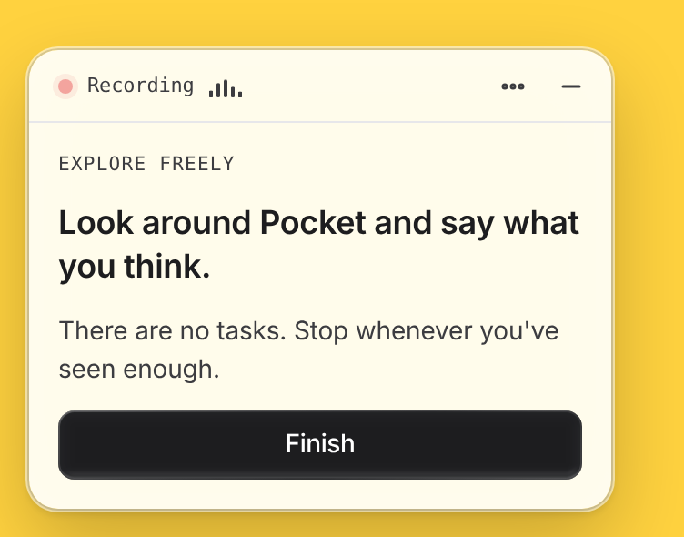
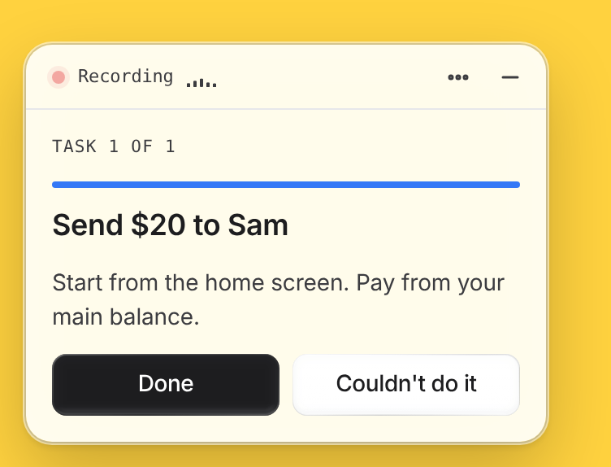
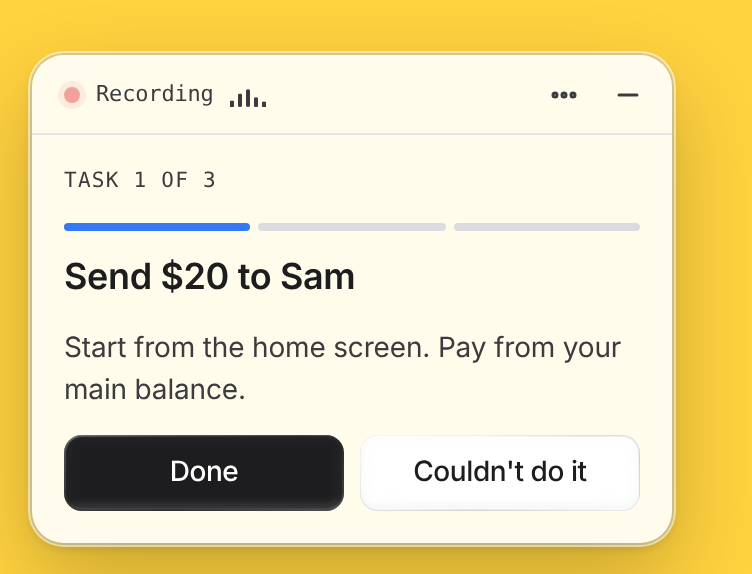
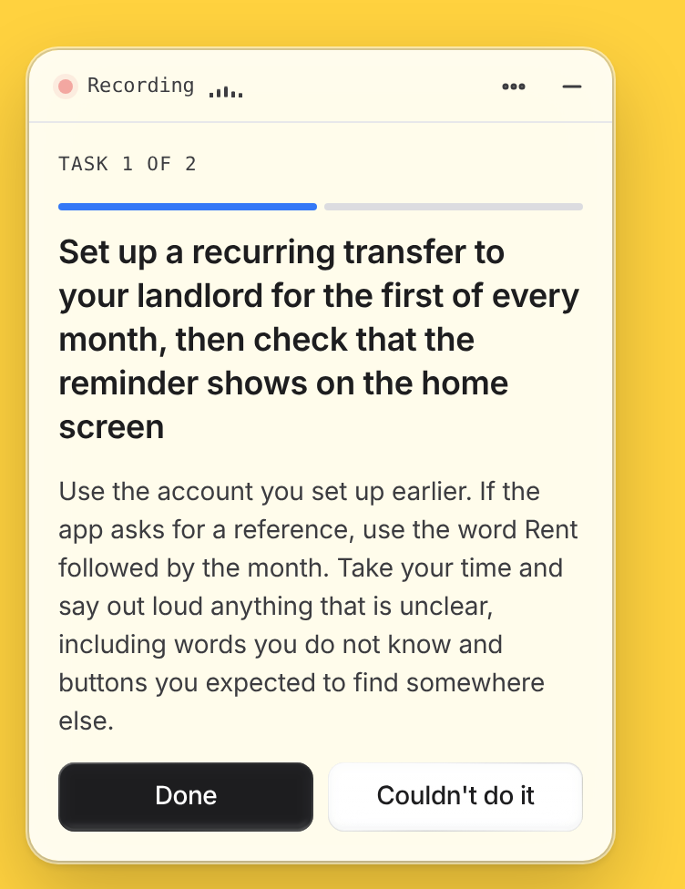
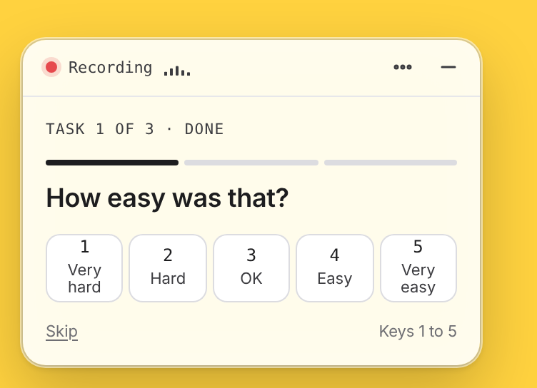
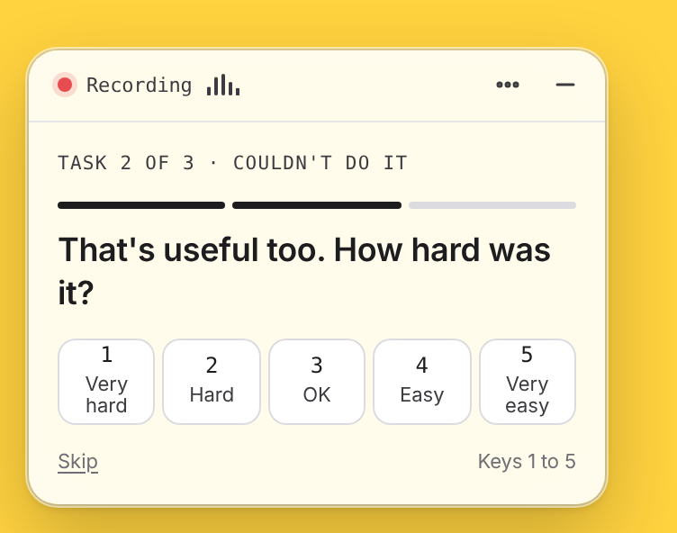
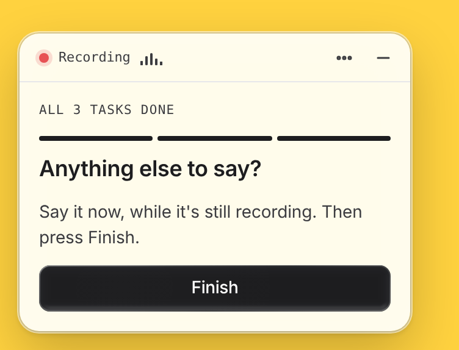
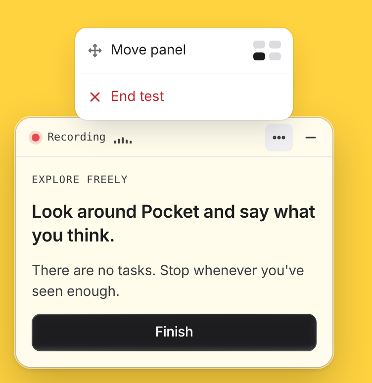
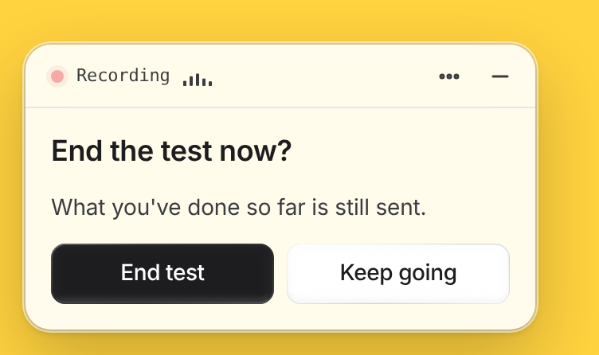
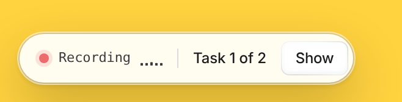
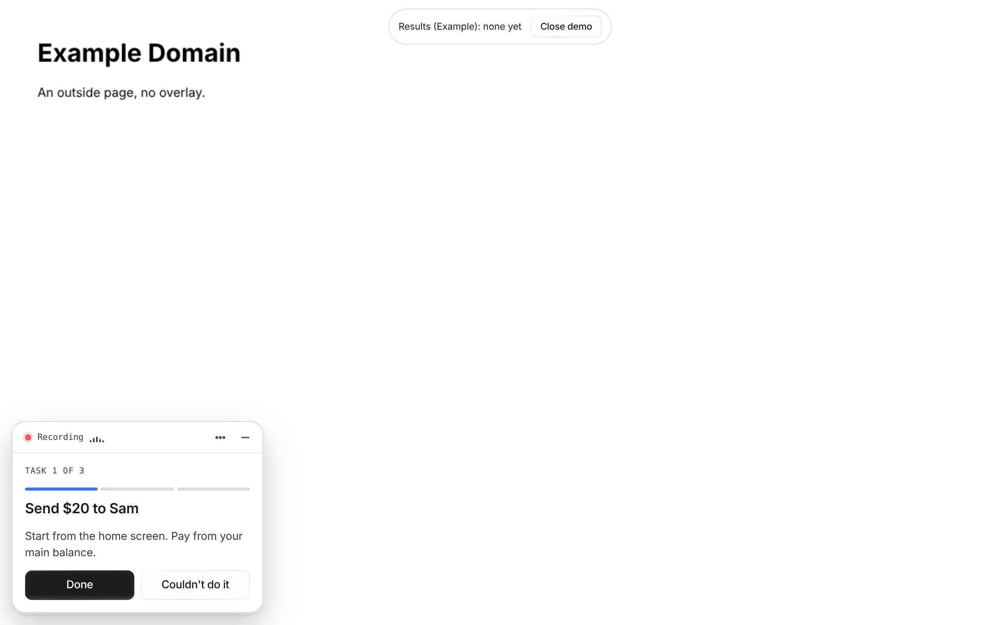
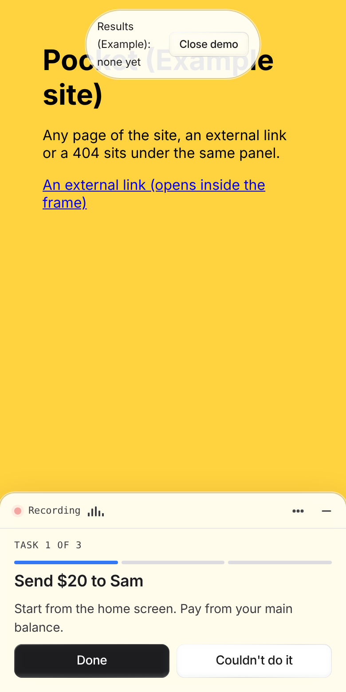
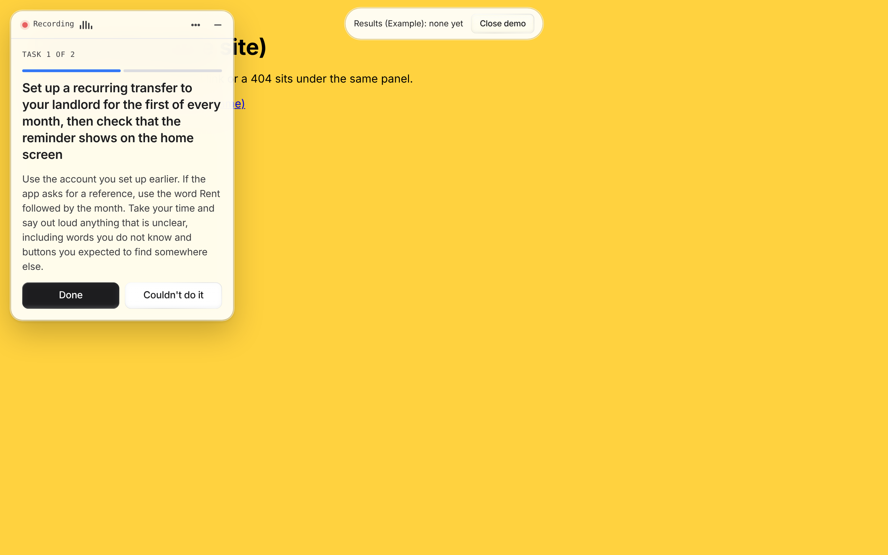
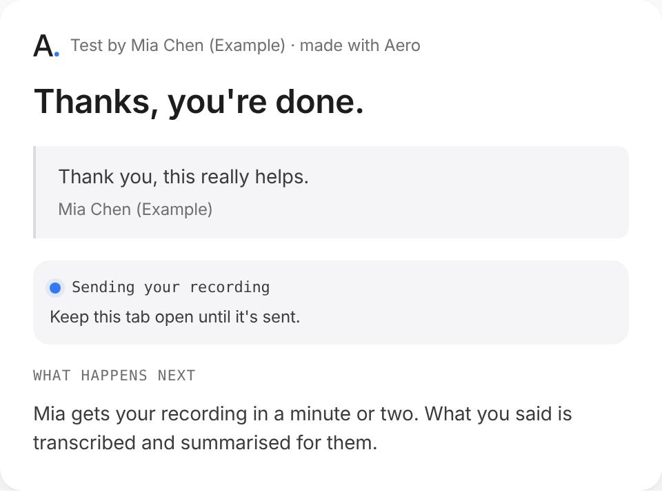
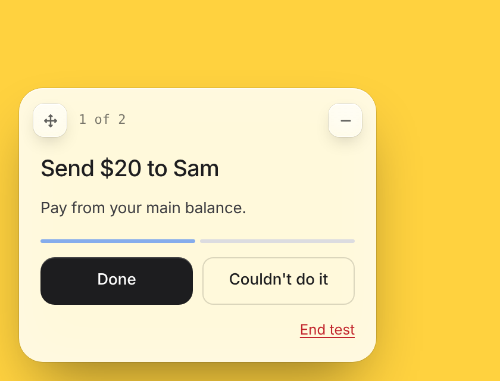
Sources: tester.html and TESTER-NOTES, UI-BRIEF, DECISIONS, the website hero demo, the app's TaskPanel and the overlay.
| Question | One design says | Another says | Recommended pick |
|---|---|---|---|
| Where the recording sign lives | Inside the panel header (the app's TaskPanel, tester.html, TESTER-NOTES item 6) | A separate glass pill at the top of the page (overlay since #293; DECISIONS 26 Oct: "a separate glass Recording pill") | Separate pill, as decided. Not built: the panel still carries the sign in its header, the same as Figma tests today. One change in TaskPanel moves it for both. I need your yes, because a pill at the top can sit on a site's own header. |
| Where it starts | Bottom right (TaskPanel before this change) | Bottom left (overlay; DECISIONS 24 Oct: "the task panel should be on the left") | Bottom left. Built, for Figma and site tests both. It remembers the corner for the session. |
| How you move it and end the test | A menu with Move panel, Mute, Restart and End test with a confirm (TaskPanel, tester.html item 9) | A move button that cycles corners, and a red End test link under the buttons (overlay) | The menu. Dragging the header also works. A destructive action stays out of sight and asks first. |
| Second button | Glass (TaskPanel) | Flat outline, a different corner radius (overlay) | Glass, the app's own component. |
| Timer | No timer, just a recording sign (DECISIONS 23 Oct, answers on the questions page) | "A separate timer" (DECISIONS 23 Oct, after the v2 board, older) | No timer. The newer line wins. Time is still recorded. |
| Shape and width | "A square panel" (older line) | 320px wide plate, 86% white, 300px in the overlay | 320px plate. Square leaves no room for long task text. |
| Done before you have tried anything | Done is off until the tester has used the prototype (TaskPanel, Figma tests) | Always on (overlay) | Always on for site tests. A site in a frame gives us no way to tell if they tried. |
| The fallback card | A dark card bottom right with every task, not movable (controller, since the overlay went in) | Gone | Removed. It showed up whenever the frame's hello arrived before the load event, and on any page without the overlay. |